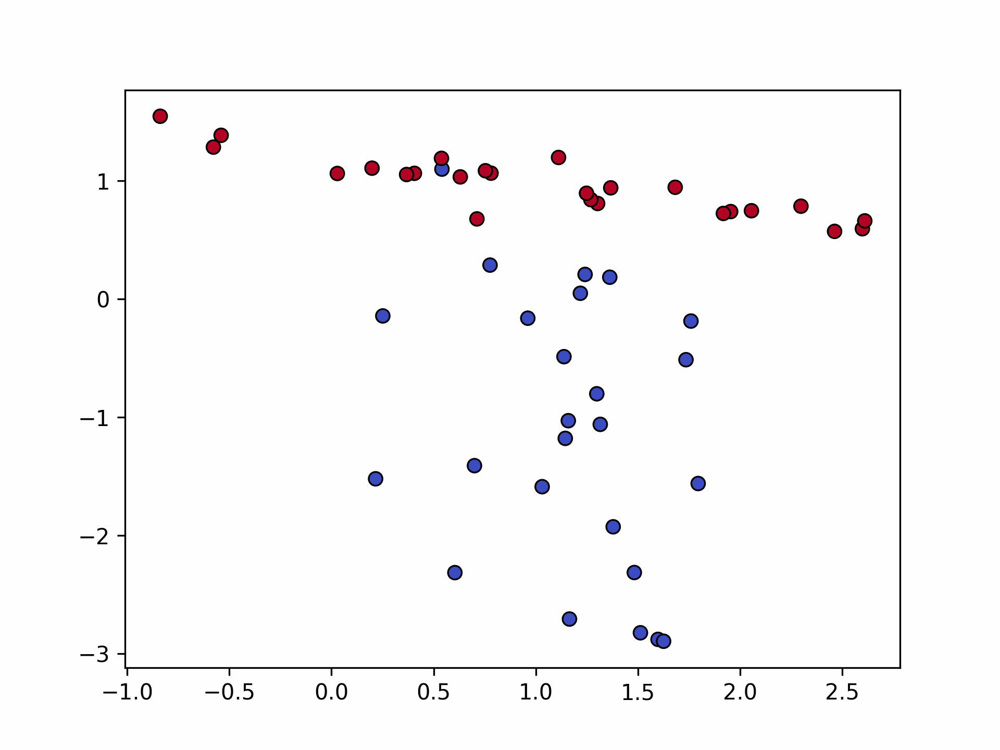
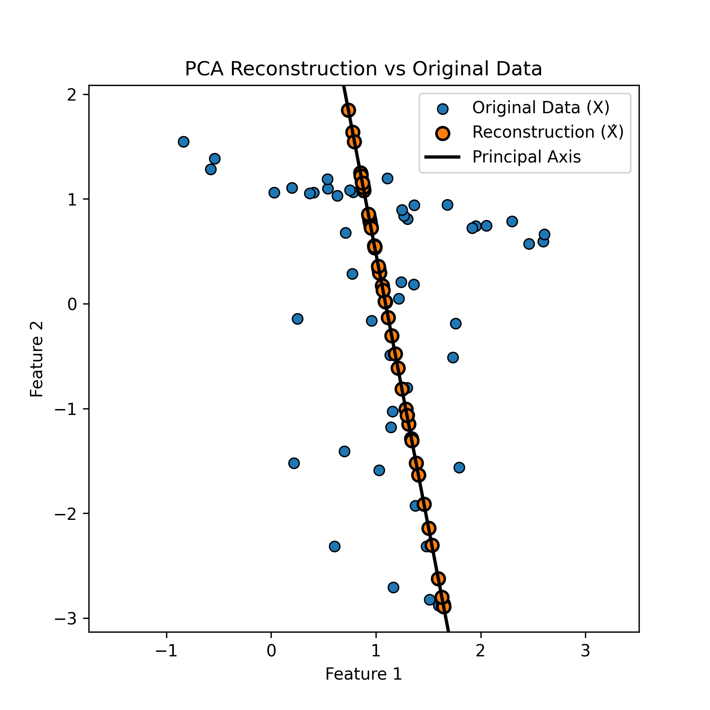

Principal Component Analysis
The following are my notes on the PCA based on various resources. I will update the resouces later
Motivating Problem:
Imagine you have 10,000-dimensional vectors (like flattened MNIST images which would be 768 dimensional) but most dimensions contain redundant information.
Can we compress these to, say, 50 dimensions while retaining 95% of the variation?
This is exactly what PCA does — it finds the most “informative” directions in the data.
Suppose we have data points $x_1, x_2, \dots , x_N \in \mathbb{R}^D$ and we want to reduce their dimension to $K$ such that $K < D$ while still preserving most of the “information” in the data.
Note: PCA assumes linear relationships. For non-linear manifolds like Swiss rolls, consider kernel PCA or autoencoders
Goal
We want to find a transformation that maps $x_i \in \mathbb{R}^D$ to some lower-dimensional representation $\alpha_i \in \mathbb{R}^K$
such that we can reconstruct $\hat{x}_i$ from it with as little error as possible.
Formally, we want to minimize the reconstruction error:
$$ \min_{\alpha_i, U} \sum_{i=1}^{N} \|x_i - \hat{x}_i\|^2 $$where $\hat{x}_i = U \alpha_i$ and $U = [u_1, u_2, \dots , u_K] \in \mathbb{R}^{D \times K}$
is the basis (each $u_j$ is a basis vector).
So our objective becomes:
$$ \min_{\alpha_i, U} \sum_{i=1}^{N} \|x_i - U\alpha_i\|^2 $$Expanding the squared term:
$$ (x_i - U\alpha_i)^T (x_i - U\alpha_i) = x_i^T x_i - 2x_i^T U\alpha_i + \alpha_i^T U^T U \alpha_i $$Solving for $\alpha_i$
Taking derivative w.r.t. $\alpha_i$ and setting to zero:
$$ \frac{\partial}{\partial \alpha_i} \|x_i - U\alpha_i\|^2 = -2U^T x_i + 2U^T U \alpha_i = 0 $$$$ \Rightarrow U^T U \alpha_i = U^T x_i $$If we assume $U$ has orthonormal columns ($U^T U = I_K$), this simplifies to:
$$ \boxed{\alpha_i = U^T x_i} $$Intuition:
The coordinates in the new $K$-dimensional space are simply the projections of $x_i$ onto each principal axis.
Each $\alpha_i^{(j)}$ tells us how much of basis vector $u_j$ we need.
The reconstruction is then:
$$ \hat{x}_i = U \alpha_i = U U^T x_i $$Geometric View:
$UU^T$ is a projection matrix that projects $x_i$ onto the subspace spanned by the columns of $U$.
Note that $UU^T \neq I$ unless $K = D$, so $\hat{x}_i \neq x_i$ in general —
the reconstruction is an approximation that discards information in the orthogonal complement.
Choosing the Best Basis $U$
Now that we know how to project and reconstruct for a given $U$, the next question is:
How do we choose $U$?
We want $U$ that minimizes the total reconstruction error:
$$ J(U) = \sum_{i=1}^{N} \|x_i - U U^T x_i\|^2 $$Expanding:
$$ J(U) = \sum_i x_i^T (I - UU^T) x_i = \sum_i x_i^T x_i - \sum_i x_i^T UU^T x_i $$The first term ($\sum_i x_i^T x_i$) is constant (doesn’t depend on $U$).
So minimizing $J(U)$ is equivalent to maximizing the second term:
or equivalently,
$$ \max_U \sum_i \|U^T x_i\|^2 $$Key Insight:
PCA finds directions (the columns of $U$) along which the projected data variance is maximized.
We’re keeping the “spread-out” directions and discarding the “flat” ones.
Connection with Covariance and Eigenvalues
Important: PCA typically assumes centered data (mean subtracted).
If $\bar{x} = \frac{1}{N}\sum_i x_i \neq 0$, replace $x_i$ with $x_i - \bar{x}$ before computing the covariance matrix.
Let’s define the sample covariance matrix:
$$ S = \frac{1}{N} \sum_{i=1}^N x_i x_i^T = \frac{1}{N} X^T X $$where $X \in \mathbb{R}^{N \times D}$ has data points as rows.
Then the total variance captured by the projection onto $U$ is:
$$ \sum_i \|U^T x_i\|^2 = N \cdot \text{tr}(U^T S U) $$Hence, maximizing variance is the same as:
$$ \boxed{\max_{U^T U = I} \text{tr}(U^T S U)} $$To solve this, we use the spectral theorem.
Let the eigen-decomposition of $S$ be:
where $\Lambda = \text{diag}(\lambda_1, \lambda_2, \dots , \lambda_D)$ and $\lambda_1 \ge \lambda_2 \ge \dots \ge \lambda_D$.
Substituting into the objective:
$$ \text{tr}(U^T S U) = \text{tr}(U^T V \Lambda V^T U) = \sum_{j=1}^{D} \lambda_j \|v_j^T U\|^2 $$Since the columns of $U$ are orthonormal, the weights $\|v_j^T U\|^2$ sum to $K$.
To maximize the above expression, we assign all weight to the largest eigenvalues —
i.e., choose $U$ as the top-$K$ eigenvectors of $S$:
Why eigenvalues matter:
$\lambda_j$ represents the variance along eigenvector $v_j$.
By selecting the top-$K$ eigenvalues, we’re keeping the $K$ directions with the most variance, thus preserving maximum information.
PCA from Variance Maximization View (Lecture Insights)
From Prof. Mitesh Khapra’s Lecture 6 (IITM CS7015):
-
Variance View:
PCA finds new axes (principal components) along which the variance of the projected data is maximum. -
Reconstruction View:
PCA also minimizes the total squared reconstruction error when projecting onto a lower-dimensional subspace. -
Decorrelation View:
The new features (principal components) are uncorrelated, because in the new coordinate system the covariance matrix becomes diagonal:
$\text{Cov}(\alpha) = U^T S U = \Lambda_K$.
So all three views — maximum variance, minimum reconstruction error, and decorrelation — are equivalent ways to think about PCA.
PCA for High-Dimensional Data
When the data are very high-dimensional such that $D \gg N$ (common in computer vision, genomics),
computing the covariance matrix
becomes extremely expensive (both in memory and time).
Directly finding the eigenvalues and eigenvectors of such a large $D \times D$ matrix is often infeasible.
However, we can exploit a useful fact from linear algebra that relates the eigen-decompositions of $A^T A$ and $A A^T$.
Key Observation
If $A^T A x = \lambda x$, then
$$ A A^T (A x) = \lambda (A x). $$Let $v = A x$. Then
$$ A A^T v = \lambda v. $$Hence, the non-zero eigenvalues of $A^T A$ and $A A^T$ are the same,
and their corresponding eigenvectors are related by:
Applying this to PCA
In PCA, we normally compute eigenvectors of $S = \frac{1}{N} X^T X$, which is of size $D \times D$.
But when $D \gg N$, we can instead compute eigenvectors of the much smaller matrix:
If
$$ X X^T v_i = \lambda_i v_i, $$then we can obtain the corresponding eigenvector of $X^T X$ as:
$$ u_i = X^T v_i. $$To make $u_i$ a unit vector, we normalize it:
$$ \|u_i\|^2 = \|X^T v_i\|^2 = v_i^T X X^T v_i = \lambda_i v_i^T v_i = \lambda_i. $$Hence,
$$ \|u_i\| = \sqrt{\lambda_i}, \quad \boxed{u_i = \frac{1}{\sqrt{\lambda_i}} X^T v_i.} $$Intuition
- The nonzero eigenvalues of $X^T X$ and $X X^T$ are identical.
- The corresponding eigenvectors are related by simple linear transformations.
- Since $X X^T$ is only $N \times N$, we can compute its eigen-decomposition much faster when $N \ll D$.
After obtaining $\{v_i, \lambda_i\}_{i=1}^N$ from $X X^T$,
we recover the PCA directions in the original high-dimensional space as $\{u_i\}$ using the formula above.
Computational Comparison
| Quantity | Large-$D$ formulation | Small-$N$ trick |
|---|---|---|
| Matrix used | $X^T X \in \mathbb{R}^{D\times D}$ | $X X^T \in \mathbb{R}^{N\times N}$ |
| Eigen-decomposition | $X^T X u_i = \lambda_i u_i$ | $X X^T v_i = \lambda_i v_i$ |
| Relation | $u_i = \dfrac{1}{\sqrt{\lambda_i}} X^T v_i$ | $v_i = \dfrac{1}{\sqrt{\lambda_i}} X u_i$ |
| Complexity | $O(D^3)$ | $O(N^3)$ (much smaller when $N \ll D$) |
Thus, PCA in high dimensions is computed efficiently by first performing eigen-decomposition on $X X^T$ and then mapping the eigenvectors back to the original feature space.
Practical Implementation Notes
SVD vs Eigendecomposition
The covariance matrix $S = X^T X / N$ can be large when $D$ is high.
In practice, PCA is often computed via SVD instead:
where:
- Columns of $V$ are the principal directions (eigenvectors of $X^T X$)
- $\Sigma$ contains singular values related to variance by $\sigma_i^2 = N \lambda_i$
- $U$ contains coefficients (eigenvectors of $X X^T$)
When to use which:
np.linalg.eig(X.T @ X): simple but numerically less stablenp.linalg.svd(X): more stable and efficient → preferred in practice
Choosing $K$
Scree plot:
Plot eigenvalues $\lambda_1, \lambda_2, \dots , \lambda_D$ in descending order.
Look for an “elbow” where the curve flattens — this suggests a good cutoff.
Cumulative variance:
Choose $K$ such that
i.e., retain 95% (or some threshold) of total variance.
Summary
| Objective | PCA Equivalent |
|---|---|
| Minimize reconstruction error | Project onto top-$K$ eigenvectors of $S = X^T X / N$ |
| Maximize variance | Keep components with largest eigenvalues |
| Decorrelate features | Use orthogonal eigenbasis |
| Reduce noise | Discard low-variance directions |
Hence the final PCA transformation is:
$$ \boxed{\alpha_i = U^T x_i, \quad \hat{x}_i = U U^T x_i} $$where $U$ contains the top-$K$ eigenvectors of the covariance matrix $S$, ordered by decreasing eigenvalue magnitude.
##Implementation
Here’s a minimal PCA implementation from scratch:
import numpy as np
class PCA:
def __init__(self, n_components):
self.K = n_components
def fit(self, X):
# Center the data
self.mean = X.mean(0)
X_centered = X - self.mean
# Compute covariance matrix
cov = (X_centered.T @ X_centered) / X_centered.shape[0]
# SVD decomposition
E, S, _ = np.linalg.svd(cov)
self.singular_values = S
# Select top-K eigenvectors
self.U = E[:, :self.K]
# Project data
alpha = X_centered @ self.U
return alpha
def reconstruct(self, alpha):
# Reconstruct from reduced representation
X_hat = alpha @ self.U.T + self.mean
return X_hat
Usage:
# Generate synthetic data
from sklearn.datasets import make_classification
X, y = make_classification(
n_samples=50, n_features=2, n_redundant=0,
n_informative=2, random_state=42, n_clusters_per_class=1
)
# Apply PCA
pca = PCA(n_components=1)
alpha = pca.fit(X)
X_reconstructed = pca.reconstruct(alpha)
# Check variance explained
explained_ratio = pca.singular_values[:1].sum() / pca.singular_values.sum()
print(f"Variance explained: {explained_ratio:.2%}")
# Output: Variance explained: 77.00%
Visualizing PCA
Let’s see how PCA works on above dataset:
plt.scatter(X[:, 0], X[:, 1], c=y, edgecolor="k", cmap="coolwarm", s=40, linewidth=0.8)
plt.savefig("pca_scatter_original.png", dpi=300)

After projecting onto the first principal component:
plt.figure(figsize=(6, 6))
plt.scatter(
X[:, 0], X[:, 1],
# c=y, # to visualize the classes
# cmap="coolwarm",
edgecolor="k", s=40, linewidth=0.8,
label="Original Data (X)"
)
plt.scatter(
X_hat[:, 0], X_hat[:, 1],
# c=y, # to visualize the classes
# cmap="magma",
edgecolor="black", s=60, linewidth=1.5,
label="Reconstruction (X̂)"
)
plt.axline(pca.mean, pca.mean + pca.U.T[0], color="black", lw=2, label="Principal Axis")
plt.legend()
plt.title("PCA Reconstruction vs Original Data")
plt.xlabel("Feature 1")
plt.ylabel("Feature 2")
plt.axis("equal")
plt.savefig("pca_projection.png", dpi=300)

Notice in Fig. 1 how the principal component captures the direction of maximum variance.
Bottom line:
PCA gives you the best linear low-dimensional representation of your data in the least-squares sense -
making it a fundamental tool for dimensionality reduction, visualization, and noise filtering in machine learning pipelines.
References
- Deisenroth, M. P., Faisal, A. A., & Ong, C. S. (2020). Mathematics for Machine Learning. Cambridge University Press.
- Bishop, C. M. (2006). Pattern Recognition and Machine Learning. Springer.
- Cornell University CS4780/5780: Machine Learning for Intelligent Systems Lecture Notes.